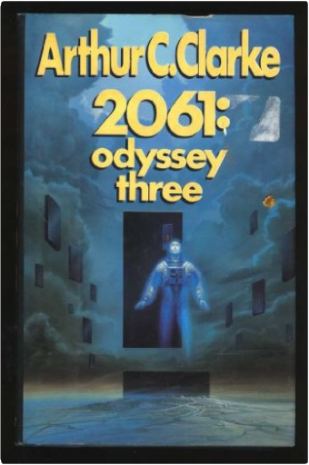
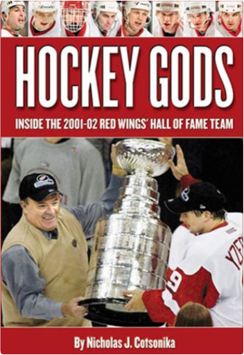
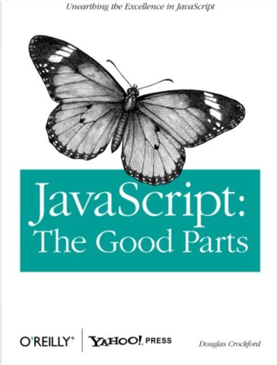

How did the rich countries really become rich? In this provocative study, Ha-Joon Chang examines the great pressure on developing countries from the developed world to adopt certain 'good policies' and 'good institutions', seen today as necessary for economic development. His conclusions are compelling and disturbing: that developed countries are attempting to 'kick away the ladder' with which they have climbed to the top, thereby preventing developing countries from adopting policies and institutions that they themselves have used.  Here is the book that converted C. S. Lewis from atheism to Christianity. This history of mankind, Christ, and Christianity is to some extent a conscious rebuttal of H. G. Wells' Outline of History, which embraced both the evolutionary origins of humanity and the mortal humanity of Jesus. Whereas Orthodoxy detailed Chesterton's own spiritual journey, this book illustrates the spiritual journey of humanity, or at least of Western civilization. A book for both mind and spirit.  "This history will endure; not only because Sir Winston has written it, but also because of its own inherent virtues - its narrative power, its fine judgment of war and politics, of soldiers and statesmen, and even more because it reflects a tradition of what Englishmen in the hey-day of their empire thought and felt about their country's past." The Daily Telegraph  "This history will endure; not only because Sir Winston has written it, but also because of its own inherent virtues - its narrative power, its fine judgment of war and politics, of soldiers and statesmen, and even more because it reflects a tradition of what Englishmen in the hey-day of their empire thought and felt about their country's past." The Daily Telegraph  "This history will endure; not only because Sir Winston has written it, but also because of its own inherent virtues - its narrative power, its fine judgment of war and politics, of soldiers and statesmen, and even more because it reflects a tradition of what Englishmen in the hey-day of their empire thought and felt about their country's past." The Daily Telegraph  "This history will endure; not only because Sir Winston has written it, but also because of its own inherent virtues - its narrative power, its fine judgment of war and politics, of soldiers and statesmen, and even more because it reflects a tradition of what Englishmen in the hey-day of their empire thought and felt about their country's past." The Daily Telegraph  How to Win an Election is an ancient Roman guide for campaigning that is as up-to-date as tomorrow's headlines. In 64 BC when idealist Marcus Cicero, Rome's greatest orator, ran for consul (the highest office in the Republic), his practical brother Quintus decided he needed some no-nonsense advice on running a successful campaign. What follows in his short letter are timeless bits of political wisdom, from the importance of promising everything to everybody and reminding voters about the sexual scandals of your opponents to being a chameleon, putting on a good show for the masses, and constantly surrounding yourself with rabid supporters. Presented here in a lively and colorful new translation, with the Latin text on facing pages, this unashamedly pragmatic primer on the humble art of personal politicking is dead-on (Cicero won)—and as relevant today as when it was written. |  2001: A Space Odyssey shocked, amazed, and delighted millions in the late 1960s. An instant book and movie classic, its fame has grown over the years. Yet along with the almost universal acclaim, a host of questions has grown more insistent through the years, for example: who or what transformed Dave Bowman into the Star-Child? What alien purpose lay behind the monoliths on the Moon and out in space? What could drive HAL to kill the crew? Now all those questions and many more have been answered, in this stunning sequel to the international bestseller. Cosmic in sweep, eloquent in its depiction of Man's place in the Universe, and filled with the romance of space, this novel is a monumental achievement and a must-read for Arthur C. Clarke fans old and new. From Carl Sagan, "A daring romp through the solar system and a worthy successor to 2001."  Arthur C. Clark, creator of one of the world's best-loved science fiction tales, revisits the most famous future ever imagined in this NEW YORK TIMES bestseller, as two expeditions into space become inextricably tangled. Heywood Floyd, survivor of two previous encounters with the mysterious monloiths, must again confront Dave Bowman, HAL, and an alien race that has decided that Mankind is to play a part in the evolution of the galaxy whether it wishes to or not.  Nine future Hall of Famers. The greatest coach of all time, who entered the Hall of Fame long ago. No NHL team has ever had a collection of characters as accomplished as the one the Detroit Red Wings had in 2001-02. God's Promises for the Graduate: New King James VersionJack Countryman A great gift for any graduate, God's Promises® for the Graduate features a newly designed cover for the 2007 graduation season.  Most programming languages contain good and bad parts, but JavaScript has more than its share of the bad, having been developed and released in a hurry before it could be refined. This authoritative book scrapes away these bad features to reveal a subset of JavaScript that's more reliable, readable, and maintainable than the language as a whole—a subset you can use to create truly extensible and efficient code. How to Live to 100 -: Top Dos and Don'ts: Antiaging and Longevity Secrets Guide with Advice on Vitamins, Food, Probiotics, Omega 3s, Iodine, Folate, ...Dr. Diane A. Culik, Kyle Weed This eBook provides a guide to living to be 100 years or older, but that’s only half of the goal. The other half is to feel young and healthy as you age. After all, what good is growing old if you are not healthy, vibrant and having fun doing it? The emphasis will be on proven secrets and tips I have learned over the years that will really help you avoid some of the landmines and take advantage of what we do know as far as extending your life and staying healthy and happy. We will list the top 10 dos and the top 10 don’ts, and for each give a list of facts, and then a discussion. Some chapters will also include an extra helpful tips section with additional information. So, in this book we will talk about the topic of aging, and look at what’s happened to people as they have tried to stay healthy and active as long as possible. I put together a list of a number of things that people should look at and do or not do as they go about their daily lives. I will go through them, and you may love me or hate me at the end of this. I am warning you, because I’ve got some things that I don’t think are controversial but a lot of people might, so we will go through them, and then you can decide for yourself. The How to Live to 100 Guidebook will show you, help you, explain, reveal, teach you, and give you the ability to: 1. Know the top 10 things you should be doing for your health 2. Know the top 10 things you should not do if you want to stay healthy 3. 43 more anti-aging tips to think about 4. Know Two vitamins you really need to be taking 5. Know the power of Fruits and vegetables 6. Know why the microwave is not good for you at all 7. Why salt and water are crucial for you and what kinds of salt and water 8. Feel Better – doing these things could help you feel much better 9. Feel Peace of mind of knowing you have invested in a healthy future for yourself 10. Achieve cleanliness by detoxification of the body 11. Strange news about a mouse getting younger! What does the future maybe hold for us? 12. And a lot more! This book recommends specific things you can do immediately to feel better and improve your health. It contains valuable health secrets and pointers you should know about if you suffer from any of these conditions. Pick up your copy today! House of LeavesMark Z. Danielewski Years ago, when House of Leaves was first being passed around, it was nothing more than a badly bundled heap of paper, parts of which would occasionally surface on the Internet. No one could have anticipated the small but devoted following this terrifying story would soon command. Starting with an odd assortment of marginalized youth — musicians, tattoo artists, programmers, strippers, environmentalists, and adrenaline junkies — the book eventually made its way into the hands of older generations, who not only found themselves in those strangely arranged pages but also discovered a way back into the lives of their estranged children. |

John's Library
Collection Total:
163 Items
163 Items
Last Updated:
Apr 7, 2017
Apr 7, 2017
 Made with Delicious Library
Made with Delicious Library